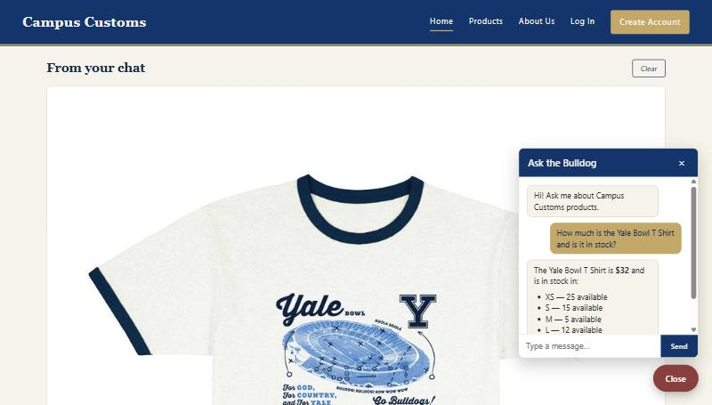
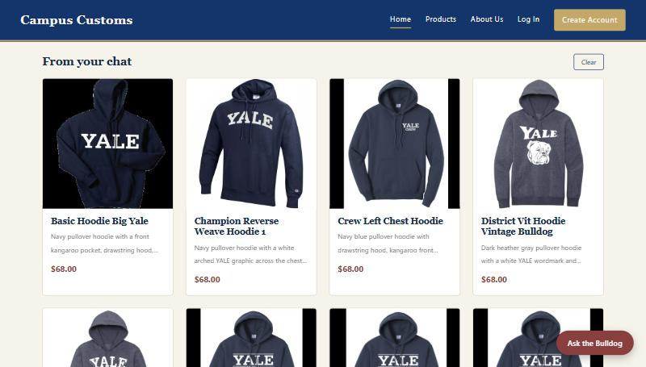
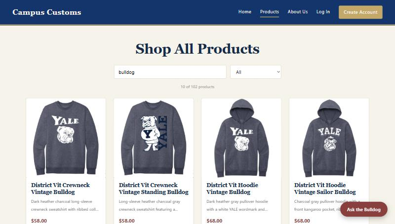

Check 1 of 3
Chat checking real inventory & price

Asked "Ask the Bulldog" how much the Yale Bowl T Shirt costs and whether it's in stock. The reply
($32, with XS–XXL counts and XL correctly called out as out of stock) matches the real rows in the
catalogue and inventory tables exactly — nothing here is guessed by the AI.
Check 2 of 3
Dynamic search-result cards from a category question

Asked "What hoodies do you have?" in chat. The assistant's text reply listed the hoodies, and — without any extra click — a "From your chat" panel appeared on the page itself with 8 real hoodie cards (photo, name, price), proving the category question actually drives a live update to the page, not just the chat bubble.
Check 3 of 3
Usability feature from Problem 9: product search & filter

Typed "bulldog" into the Products page search box. The grid instantly narrowed from all 102 products down to the 10 that actually mention "bulldog," with the running count ("10 of 102 products") updating live — confirming the Problem 9 search/filter feature works in the running app.